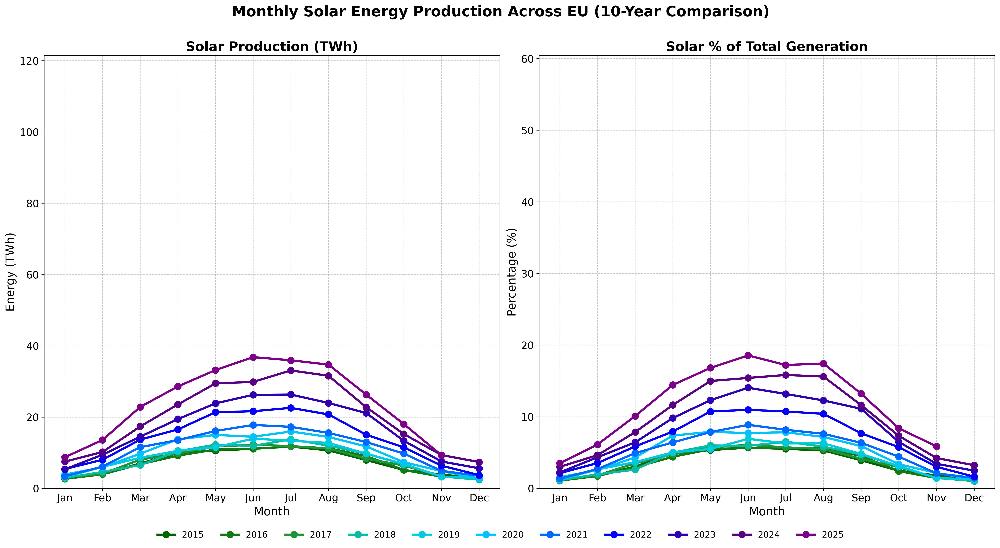
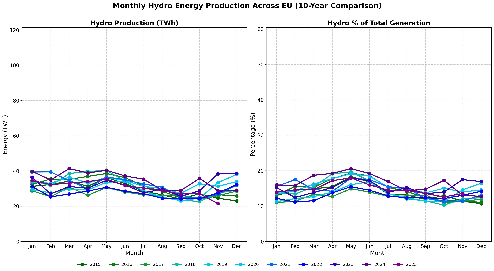

Monthly Energy Production Trends
10-year monthly comparison (2015-2025)
Data Period: 2015-2025 (current year shows partial data)
Left Charts: Absolute production in GWh | Right Charts: Percentage of total generation
Solar Energy Production
Showing strong seasonal variation with peak production in summer months and steady growth year-over-year
Wind Energy Production

Peak production typically in winter months with significant year-to-year growth
Hydro Energy Production
Seasonal patterns influenced by precipitation and snowmelt, with variations across years
Total Renewable Energy Production

Combined renewable energy showing steady increase in both absolute production and percentage of total generation
Key Insights
- Solar production shows strong seasonality with 3-4x variation between summer and winter
- Wind production is counter-seasonal to solar, with higher output in winter months
- Combined renewables benefit from this complementary seasonal pattern
- Renewable percentage of total generation has grown significantly across all months